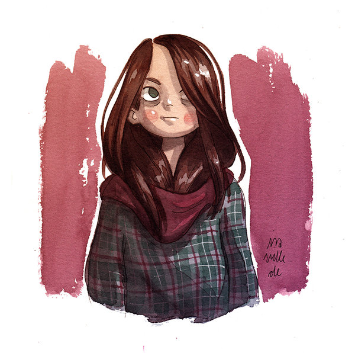
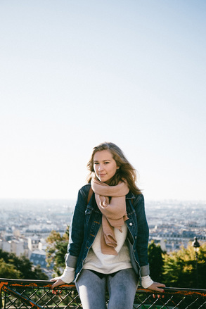

Artistes


Pascal Campion
Pascal Campion es un ilustrador y animador franco-americano. Estudió ilustración narrativa en el Arts Décoratifs de Estrasburgo, en Francia. Él se deleita en compañía de su esposa e hija y le resulta muy difícil escribir sobre sí mismo. Trabaja en un estudio de techos altos en San Francisco. Pascal ha trabajado en un amplio abanico de medios, desde juegos, videos musicales y películas a libros.@PascalCampion
Puuung
Artist “Puuung” captures those little moments that make love whole in these heartwarming illustrations. In relationships, every-day interactions are more important than grand gestures—basically, don't forget the small things. “Love is something that everybody can relate to. And Love comes in ways that we can easily overlook in our daily lives. So, I try to find the meaning of love in our daily lives and make it into artwork,” writes Puuung on Facebook.@Puuung
Laura Heikkala
Niñas, brujas y gatos son los principales sujetos en las ilustraciones de la estudiante de diseño gráfico finlandesa, y quizás eso y tengan una sensibilidad parecida al mundo creado por Hayao Miyazaki, fundamento suficiente para querer mostrarles sus acuarelas (porque sí, son acuarelas).@Heikala
Cassandra Calin
Cassandra Calin es una joven artista con un gran sentido del humor. Rumana de nacimiento, aunque afincada en Canadá y de tan sólo 21 años, nos enseña con sus dibujos los “problemas” más cotidianos a los que toda chica puede enfrentarse. @CassandraCallin
Elliana Esquivel
Elliana Esquivel es una joven ilustradora de 19 años de edad que vive en Carolina del Norte, Estados Unidos. Ha estado dibujando desde la infancia y su arte consiste en dibujos de tinta crípticos resumiendo alguna observación o idea acerca de la vida, casi siempre basada en experiencias personales.@Cassandra
Likrot
Artista d'origen desconegut, especialitzat/ada en aquarela i "gel rolls", els seus dibuixos són prácticament tots primers plans de dones fastasmagòriques, poderoses, màgiques.@Likrot
Ira Sluyterman
Ira és una maravillosa il·lustradora que estudia a Munich, la seua obra es compòn de xicotetes aquarel·les en les que es mostren plantes, boscos, amb colors càlids i variats. També s'especialitza en el disseny de personatges.@Iraville
Raquel Riba Rossy
Lola Vendetta es el alter ego de Raquel Riba Rossy, una joven ilustradora hija de los 90’s residente en Barcelona. El personje nació en 2014 bajo la necesidad de expresar lo que la autora sentía hacia esas cosas de la sociedad y de algunos indivíduos que le tocaban los ovarios.@LolaVendetta
Melodie Perrault
Esta canadiense de 26 años comenzó su idilio con el papel y la piel a los 17 años, cuando se mudó a Montreal a estudiar artes plásticas y se compró su primera máquina para tatuar. De aquellos años aprendió dos cosas: que usarse a sí misma como conejillo de indias para aprender a tatuar no es buena idea y que disfruta muchísimo más recreando escenas eróticas con un toque de humor que limitando su imaginación con ilustraciones convencionales.@MelodiePerrault
Sibylline Meynet
Artista parisina especialitzada en la figura femenina i la técnica de retolador.@Sibylline